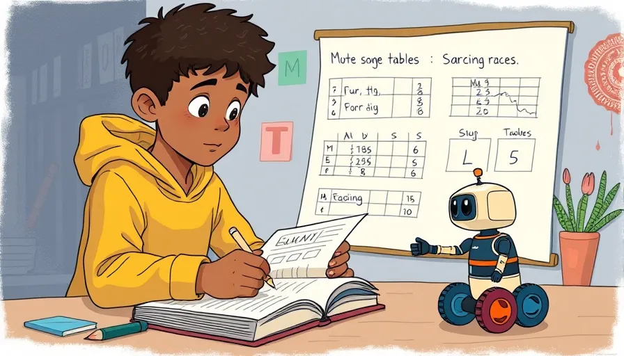
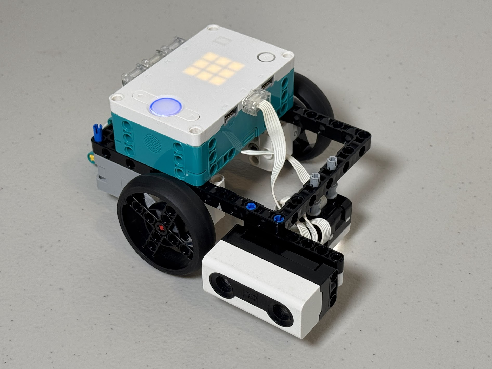
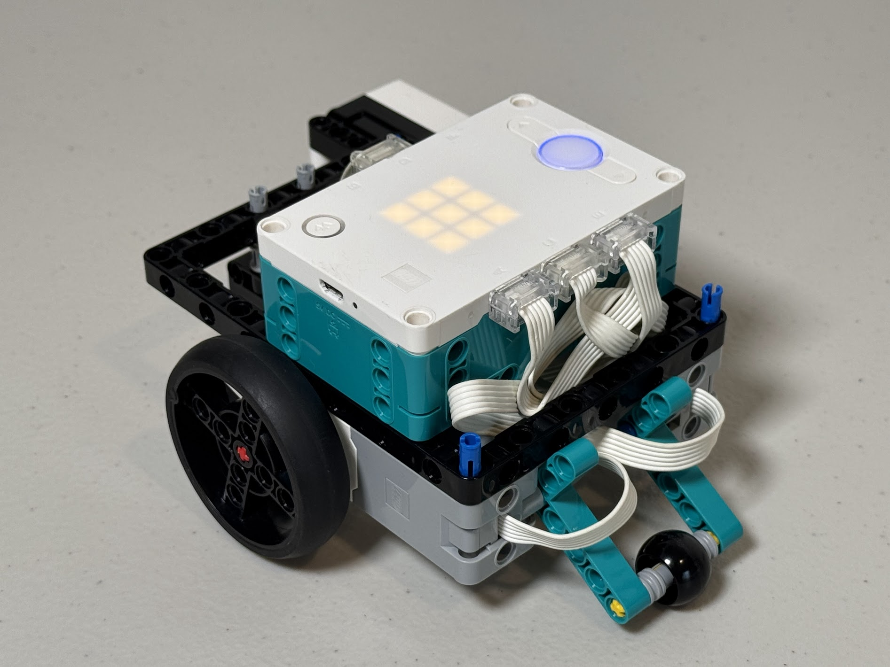
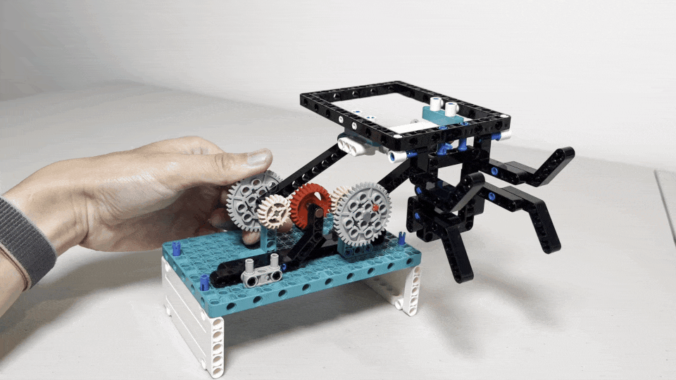

Week 2 - Runnign Experiments
Hello, young engineers!
Today’s mission: experiment with our robots to find out their full potential.
Grab your notebooks and let’s start our journey of discovery!
Labratory Notebook

Great discoveries start with great notes!
Jotting things down in your lab notebook helps you remember your awesome ideas and learn from every experiment.
Software Experiments
Note
The folowoing codes are tested with a robot configured like this.
 
Gyro - On and Off
Pybricks offer use_gyro() function to take advantage of the hub's internal IMU to keep robot's course.
Let's run an experiment to see the benefit of this function by running the following code.
Tip
The code uses hub_menu() function to let you enable (G) or disable(N) the gyro function.
from pybricks.tools import hub_menu
from pybricks.hubs import PrimeHub
from pybricks.pupdevices import Motor, ColorSensor, UltrasonicSensor
from pybricks.parameters import Button, Color, Direction, Port, Side, Stop
from pybricks.robotics import DriveBase
from pybricks.tools import wait, StopWatch
import constants
print("Menu shown: G, N")
selected = hub_menu("G", "N")
wheel_e = Motor(Port.E, reset_angle=True)
wheel_a = Motor(Port.A, Direction.COUNTERCLOCKWISE, reset_angle=True)
drive = DriveBase(left_motor=wheel_a,
right_motor=wheel_e,
wheel_diameter=constants.WHEEL_DIAMETER,
axle_track=constants.AXLE_LENGTH)
drive.settings(straight_speed=920,
straight_acceleration=900,
turn_rate=920,
turn_acceleration=900)
if selected == "G":
drive.use_gyro(use_gyro=True)
print("### Gyro enabled")
elif selected == "N":
print("### Gyro disabled")
drive.turn(360)
wait(5000) # wait 5 sec
UNIT_LENGTH = 300
# go NORTH
drive.straight(UNIT_LENGTH * 2)
drive.turn(90)
print("Now facing EAST")
# go EAST
drive.straight(UNIT_LENGTH)
drive.turn(90)
print("Now facing SOUTH")
# go SOUTH
drive.straight(UNIT_LENGTH)
drive.turn(90)
print("Now facing WEST")
# go WEST
drive.straight(UNIT_LENGTH)
drive.turn(90)
print("Now facing NORTH")
# go back to ORIGIN
drive.straight(-UNIT_LENGTH)
print("Back to (supporsedly) the original position")
#Dimensions of the robot in mm
AXLE_LENGTH = 111
WHEEL_DIAMETER = 55
Exercise
Summerize your observation on your notebook.
| 🔔 Gyro On | 🔕 Gyro Off | |
|---|---|---|
| Your observation |
Are there any other variables that impact the result? How about the smoothness of the floor?
| 🔔 Gyro On | 🔕 Gyro Off | |
|---|---|---|
| Smooth surface | ||
| Rough surface |
Sensor feedback (Ultrasonic sensor) - On and Off
We have been relying on dead reckoning to have our robot navigate on the game mat.
Let's explore alternative navigation method, this time using a feedback from the ultrasonic sensor to keep a certain distance from a side wall.
Tip
The code below assumes that you mount the ultrasonic distance sensor on the right hand side of the robot.
It uses hub_menu() function to let you enable (F) or disable(N) the sensor feedback.
from pybricks.tools import hub_menu
from pybricks.hubs import PrimeHub
from pybricks.pupdevices import Motor, ColorSensor, UltrasonicSensor
from pybricks.parameters import Button, Color, Direction, Port, Side, Stop
from pybricks.robotics import DriveBase
from pybricks.tools import wait, StopWatch, hub_menu
import constants
print("Menu shown: F, N")
selected = hub_menu("F", "N")
if selected == "F":
sensor_feedback = True
print("### Sensor feedback enabled")
elif selected == "N":
sensor_feedback = False
print("### Sensor feedback disabled")
wheel_e = Motor(Port.E, reset_angle=True)
wheel_a = Motor(Port.A, Direction.COUNTERCLOCKWISE, reset_angle=True)
drive = DriveBase(left_motor=wheel_a,
right_motor=wheel_e,
wheel_diameter=constants.WHEEL_DIAMETER,
axle_track=constants.AXLE_LENGTH)
drive.settings(straight_speed=920,
straight_acceleration=900,
turn_rate=920,
turn_acceleration=900)
drive.use_gyro(use_gyro=True)
rangesensor = UltrasonicSensor(port=Port.D)
TARGET_DISTANCE = 200 # Try to keep 20cm away from a wall on the right
LOW_SPEED = 80
HIGH_SPEED = 300
count = 0
SPEEDUP_COUNT = 100
END_COUNT = 500
while True:
distance = rangesensor.distance()
if sensor_feedback:
if count < SPEEDUP_COUNT:
correction_angle = (distance - TARGET_DISTANCE)*2
print(f"{count:04} ... Measured: {distance}, correction_angle: {correction_angle}")
drive.drive(LOW_SPEED, correction_angle)
else:
correction_angle = (distance - TARGET_DISTANCE)
print(f"{count:04} >>> Measured: {distance}, correction_angle: {correction_angle}")
drive.drive(HIGH_SPEED, correction_angle)
else:
print(f"{count:04} ||| Measured: {distance}")
drive.drive(HIGH_SPEED, 0)
count = count + 1
if count > END_COUNT:
drive.stop()
break
#Dimensions of the robot in mm
AXLE_LENGTH = 111
WHEEL_DIAMETER = 55
Exercise
Summerize your observation on your notebook.
| Mode | When aligned perfectly |
When alignment slightly off |
When alignment wildly off |
|---|---|---|---|
| 🔔 Feedback On | |||
| 🔕 Feedback Off |
Speed test
Exercise
-
Create a program (or modify the existing codes) to test various speed and acceleration.
Record each result and examine the effect on accuracy. -
Repeat the same for acceleration.
-
Record each result and summerize your observation.
Solution
Tip
By nesting the hub_menu() function, you can create mutliple-stage menu structure.
from pybricks.hubs import PrimeHub
from pybricks.pupdevices import Motor, ColorSensor, UltrasonicSensor, ForceSensor
from pybricks.parameters import Button, Color, Direction, Port, Side, Stop
from pybricks.robotics import DriveBase
from pybricks.tools import wait, StopWatch, hub_menu
import constants
hub = PrimeHub()
wheel_e = Motor(Port.E, reset_angle=True)
wheel_a = Motor(Port.A, Direction.COUNTERCLOCKWISE, reset_angle=True)
drive = DriveBase(left_motor=wheel_a,
right_motor=wheel_e,
wheel_diameter=constants.WHEEL_DIAMETER,
axle_track=constants.AXLE_LENGTH)
selected_speed = 1
while True:
print("Menu shown: G, N, 1")
selected = hub_menu("G", "N", "1")
if selected == "G":
drive.use_gyro(use_gyro=True)
print("### Gyro enabled")
break
elif selected == "N":
print("### Gyro disabled")
break
elif selected == "1":
print("Menu shown: 1, 2, 3, 4, 5, 6, 7, 8, 9")
selected_speed = hub_menu(1, 2, 3, 4, 5, 6, 7, 8, 9)
speed = selected_speed*100
drive.settings(straight_speed=speed,
straight_acceleration=900,
turn_rate=speed,
turn_acceleration=900)
drive.turn(360)
wait(2000) # wait 2 sec
UNIT_LENGTH = 300
# go NORTH
drive.straight(UNIT_LENGTH * 2)
drive.turn(90)
print("Now facing EAST")
# go EAST
drive.straight(UNIT_LENGTH)
drive.turn(90)
print("Now facing SOUTH")
# go SOUTH
drive.straight(UNIT_LENGTH)
drive.turn(90)
print("Now facing WEST")
# go WEST
drive.straight(UNIT_LENGTH)
drive.turn(90)
print("Now facing NORTH")
# go back to ORIGIN
drive.straight(-UNIT_LENGTH)
print("Back to (supporsedly) the original position")
🎁 Bonus
Run the following code 🎶.
Credit: FTC team 23247 the Monongahela Cryptid Cooperative
from pybricks.hubs import PrimeHub
hub = PrimeHub()
x0 = ["D4/12", "D4/12", "D4/12"]
x1 = ["G4/2", "D5/2"]
x2 = ["C5/12", "B4/12", "A4/12", "G5/2", "D5/4"]
x3 = ["C5/12", "B4/12", "C5/12", "A4/2", "D4/6", "D4/12"]
x4 = ["E4/4.", "E4/8", "C5/8", "B4/8", "A4/8", "G4/8"]
x5 = ["G4/12", "A4/12", "B4/12", "A4/6", "E4/12", "F#4/4", "D4/6", "D4/12"]
x6 = ["D5/4", "A4/2", "D4/6", "D4/12"]
x7 = ["G4/12", "A4/12", "B4/12", "A4/6", "E4/12", "F#4/4", "D5/6", "D5/12"]
x8 = ["G5/6", "F5/12", "Eb5/6", "D5/12", "C5/6", "Bb4/12", "A4/6", "G4/12"]
x9 = ["D5/2."]
x10 = ["G5/12", "F5/12", "Eb5/12", "Bb5/2", "A5/4", "G5/8", "R/8", "G4/12", "G4/12", "G4/12", "G4/4"]
test = x0 + x1 + x2 + x2 + x3 + x1 + x2 + x2 + x3 + x4 + x5 + x4 + x6 + x4 + x7 + x8 + x9 + x0 + x1 + x2 + x2 + x3 + x1 + x2 + x10
hub.speaker.play_notes(test)
Exercise
Had fun? Try the other programs from FTC team 23247 the Monongahela Cryptid Cooperative
- FLL-2023-old
mcc_icons_music.py: You can create your own icons as well!
Hardware Experiments
Non-linear mechanism

Homework
Homework for next session
- Create GitHub account
Warning
Currently, it is not possible for a minor (age under 13) to create a GitHub account...
So we need to find some way around...